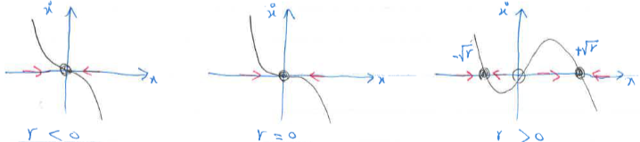

Pitchfork Bifurcation
Pitchfork bifurcation is common in physical problems that have a symmetry. For example, many problems have a spatial symmetry between left and right. In such cases, fixed points tend to appear and disappear in symmetrical pairs
Supercritical Pitchfork Bifurcation
The normal form of the supercritical pitchfork bifurcation is \( \dot{x} = r x - x^3 \)

- When \( r < 0 \), there is only one fixed point, \( x^* = 0 \)
- When \( r = 0 \), the origin is still stable, but only weakly because the linear term has vanished. Thus there is no longer an exponential decay towards \( x^* = 0 \). This is called critical slowing down
- When \( r > 0 \), the origin becomes unstable and two new fixed points occur, at \( x^* = \pm\sqrt{r} \), both are stable

Supercritical pitchfork diagram
1Strogatz, S.H. (2015). Nonlinear Dynamics and Chaos: With Applications to Physics, Biology, Chemistry, and Engineering (2nd ed.). CRC Press.
2Daniel Rothman. (2022). Nonlinear Dynamics: Chaos. MIT OpenCourseWare.